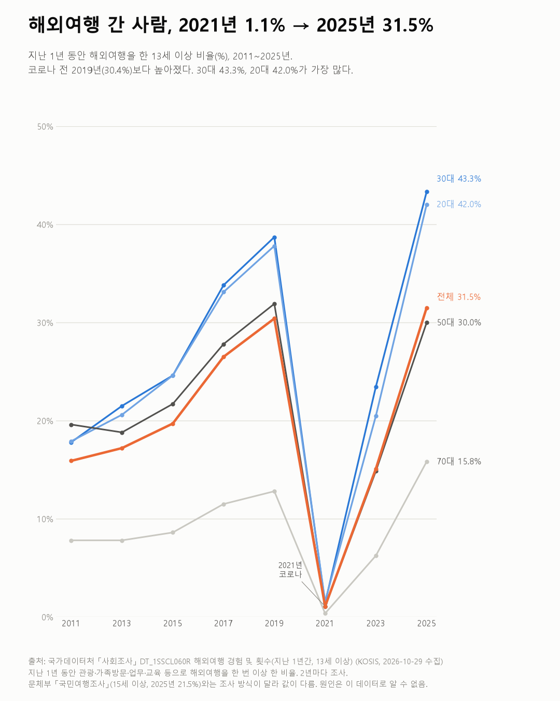
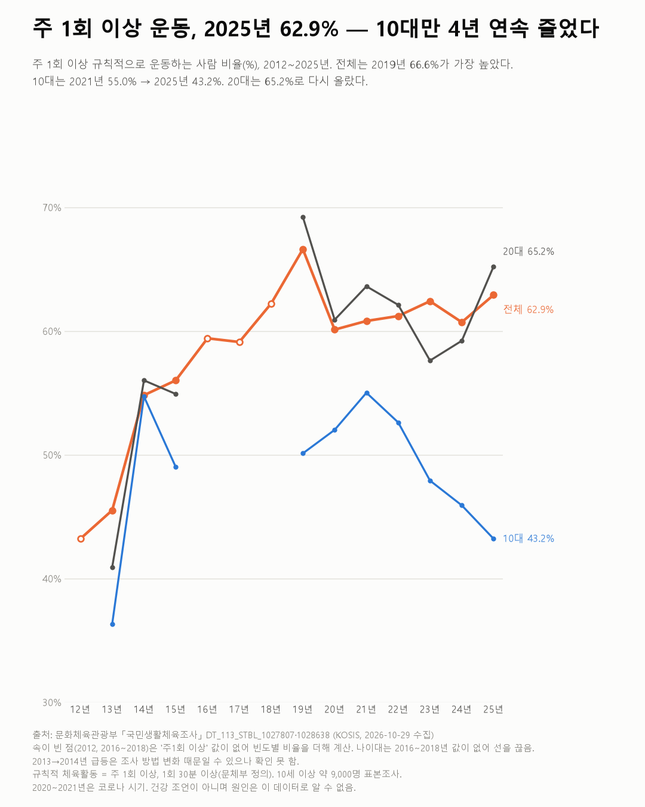
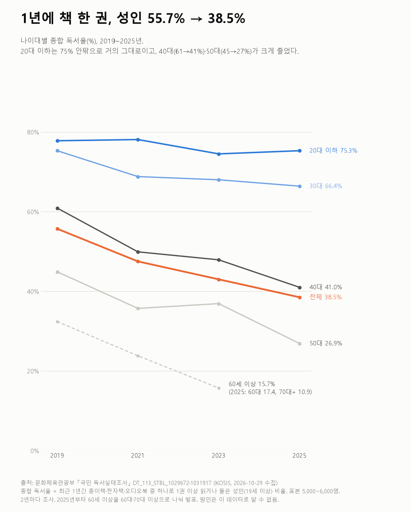

데이터 한 컷
흩어진 공공데이터로 질문 하나에 차트 한 장. 출처와 한계를 함께 공개합니다.
- 출처표 이름과 수집일
- 한계이 데이터로 말할 수 없는 것
- 전제데이터를 보기 전에 적은 기준
- 새 글여가
31.5%지난 1년 해외여행을 한 13세 이상 (2025; 2019년 30.4%)
해외여행 간 사람, 2021년 1.1% → 2025년 31.5%
사회조사
- 여가 · 생활시간
62.9%주 1회 이상 운동하는 사람 (2025; 10대는 43.2%)
주 1회 이상 운동 62.9%, 10대만 4년 연속 줄었다
국민생활체육조사
- 여가 · 생활시간
55.7% → 38.5%1년에 책을 1권 이상 읽은 성인 (2019 → 2025)
1년에 책 한 권, 성인 55.7% → 38.5%
국민 독서실태조사
지난 글
- 4.0배일과 이직 · 돈근속 20년 이상 848만 원, 1년 미만 214만 원임금근로일자리 소득
- 39.4%창업 · 돈새로 연 가게 10곳 중 4곳은 온라인 판매국세통계 생활업종
- 2.24 → 2.00배일과 이직 · 돈대기업·중소기업 월급 차이, 비율은 좁혀지고 금액은 커졌다임금근로일자리 소득
- 16~39%인플루언서 · 돈크리에이터 몫, 수익 종류에 따라 16~39%디지털크리에이터미디어산업 실태조사
- 32분 → 71분인플루언서 · 생활시간20대 '비디오 시청' 하루 32분 → 71분생활시간조사
- +42%돈 · 생활비1인 가구 지출 6년 새 +22%, 오락·문화는 +42%가계동향조사
- 22.6% → 13.8%기기와 생활 · 여가사진 취미, 2019년 22.6% → 2025년 13.8%국민여가활동조사
- −34%일과 이직 · 개발소프트웨어 개발자 구인, 3년 새 34% 줄었다직종별사업체노동력조사
- 5% → 18%일과 이직첫 직장을 그만둔 이유, '계약 끝남'이 5% → 18%청년층 부가조사
- +14% vs +49%돈 · 자산8년 새 순자산, 전체 +49% · 30대 가구 +14%가계금융복지조사
- 36.5%돈 · 창업창업 5년 뒤 살아남은 기업은 36.5%기업생멸행정통계
- −69분일과 이직 · 생활시간일하는 사람의 평일, 25년 새 일은 69분 줄었다생활시간조사
- +44.1%돈 · 생활비10년 새 물가 23%, 먹거리는 44% 올랐다소비자물가조사
- 45.8%일과 이직입사 1년 미만, 1년 뒤 같은 직장에 남은 사람은 46%일자리이동통계
- 2.2배일과 이직 · 돈개발자 월급, 경력 10년 이상은 1년 미만의 2.2배고용형태별근로실태조사
- 0.55 → 0.15대기기와 생활디지털카메라는 줄고, 태블릿은 늘었다방송매체이용행태조사 + 한국미디어패널
- 923만 원 vs 7,100만 원돈 · 인플루언서'유튜버 평균 수입'은 7,100만 원? 923만 원?국세통계 원천징수
- 57.8%일과 이직 · 돈이직하면 월급이 오를까? 10명 중 6명꼴일자리이동통계
- 21 / 25구사는 곳서울 21개 구는 '20대만 들어오는 동네'였다인구이동
- +35,937명사는 곳서울은 사람이 빠져나가는데, 20대는 들어왔다인구이동 + 주민등록인구